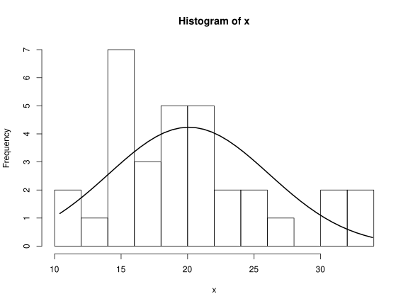

class: center, middle # Descriptive Statistics <h3 style="color: darkblue">Tae Geun Kim</h3> --- ## Table of Contents * Univariate Samples -- * Boxplots -- * QQ-Plot -- * Correlation --- class: center, middle # Univariate Samples --- ### Sample Statistics * Sample mean $$ \bar{X} = \frac{1}{n}\sum\_{i=1}^n X\_i $$ -- * Sample variance $$ S\_X^2 = \frac{1}{n-1} \sum\_{i=1}^n (X\_i - \bar{X})^2$$ -- * Sample median: ?? -- * Sample mode: ?? --- class: center, middle ## Problem #1 <p style="font-size:24px">Implement Sample mean, variance, median & Sample mode<br/> in 10 minutes</p> <p style="font-size:20px">Hint: Use sorting algorithms</p> --- ### Hint: Quick Sort (Algorithm) * Quick sort is one of famous sorting algorithms. -- * It is commonly known as fastest sorting algorithms in real word data. -- * Here are algorithms -- * Choose middle value as pivot. -- * All smaller values move to left of pivot and vice versa. -- * Repeat these processes to left & right lists. --- ### Hint: Quick Sort (R Code) ```R quicksort <- function(xs) { l <- length(xs) if (l == 0 || l == 1) { return(xs) } pivot <- xs[length(xs)/2] less <- c() more <- c() equal <- c() for (x in xs) { if (x < pivot) { less <- c(less,x) } else if (x > pivot) { more <- c(more,x) } else { equal <- c(equal,x) } } return(c(quicksort(less), equal, quicksort(more))) } ``` --- class: center, middle ## Homework #9 <p style="font-size:24px">Study and implement other sorting algorithms <br/>(Bubble Sort, Merge Sort, Insertion Sort)</p> [Reference](https://medium.com/@fiv3star/%EC%A0%95%EB%A0%AC%EC%95%8C%EA%B3%A0%EB%A6%AC%EC%A6%98-sorting-algorithm-%EC%A0%95%EB%A6%AC-8ca307269dc7) --- ### Histograms A simple technique to obtain an idea of the probability density giving the data `\(x_1, \cdots , x_n\)` is the **histogram**. Choose a partition `\(a_0 < a_1 < \cdots < a_m\)` that covers the range of the data `\(x_1,\cdots,x_n\)` then the scaled histogram is given as -- $$ h\_n(x) = \frac{\\#\left(1\leq i \leq n : x\_i \in (a\_{j-1},a\_j]\right)}{n(a\_j - a\_{j-1})} = \frac{1}{n(a\_j - a\_{j-1})} \sum\_{i=1}^n 1\_{a\_{j-1} < x\_i \leq a\_j} $$ -- $$ \begin{aligned} E h\_n(x) &= E \frac{1}{n(a\_j - a\_{j-1})} \sum\_{i=1}^n 1\_{a\_{j-1} < x\_i \leq a\_j} = \frac{1}{a\_j - a\_{j-1}}E 1\_{a\_{j-1} < X\_k \leq a\_j} \\\ &= \frac{1}{a\_j - a\_{j-1}} P(a\_{j-1} < X\_k \leq a\_j) = \frac{\int\_{a\_{j-1}}^{a\_j} f(s)ds}{a\_j - a\_{j-1}} \\\ \\\ &\simeq f(x) ~~~~ (a\_{j-1} < x \leq a\_{j}) \end{aligned} $$ --- ### Histograms * Expected value of `\(h_n(x)\)` is approximately equal to `\(f(x)\)`. -- * By the law of large numbers, `\(h_n(x)\)` converges in probability to this expected value. -- * Therefore, a histogram provides an impression of the distribution giving a sample. -- ```R x <- mtcars$mpg svg(filename="hist.svg", width=8, height=6) h <- hist(x, breaks=10) xfit <- seq(min(x),max(x),length=40) yfit <- dnorm(xfit,mean=mean(x),sd=sd(x)) yfit <- yfit * diff(h$mids[1:2]) * length(x) lines(xfit, yfit, lwd=2) dev.off() ``` --- ### Histograms <p style="text-align:center"></img></p> --- class: center, middle # Boxplots --- ### Boxplots A **boxplot** is a graphical representation of the data that gives an idea of the location and dispersion of the data, of possible outliers in the observations, and of the symmetry of the distrubtion giving the observations. -- * Bottom : Minimum -- * 2nd : 1st Quartile -- * Mid : 2nd Quartile (Median) -- * 4th : 3rd Quartile -- * Top : Maximum -- 2nd ~ 4th is called **interquartile range**. --- class: center, middle # QQ-Plots --- ### Location-scale family * Location-scale family -- If the random variable `\(X\)` has a distribution function `\(F\)`, then `\(Y = a+bX\)` has the distribution function `\(F_{a,b}\)` given by $$ F\_{a,b}(y) = P(a+bX\leq Y) = F\left(\frac{y-a}{b}\right), \hspace{2cm} b>0$$ The family of distributions `\(\{F_{a,b}: a \in \mathbb{R},b>0\}\)` is called the **location-scale family** associated with `\(F\)` (or "for `\(X\)`") -- If `\(F\)` has probability density `\(f\)`, then `\(F_{a,b}\)` has probability density `\(f_{a,b}\)` given by $$f\_{a,b}(y) = \frac{d}{dy}F\left(\frac{y-a}{b}\right) = \frac{1}{b}f\left(\frac{y-a}{b}\right)$$ --- ### Location-scale family * Mean & Variance -- If `\(EX = 0,~ \text{var } X = 1\)`, then `\(EY = a,~ \text{var } Y = b^2\)` -- To every (standard) distribution (normal, Cauchy, exponential, etc.) corresponds a ---